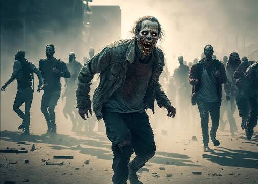

Escape the Zombies


You wake up and see that your district was over thrown by zombies, while looking for a way out you come across equipment/clothes and weapons. With both options being in different buildings and zommbies closing in on you, which one do you prioritize.